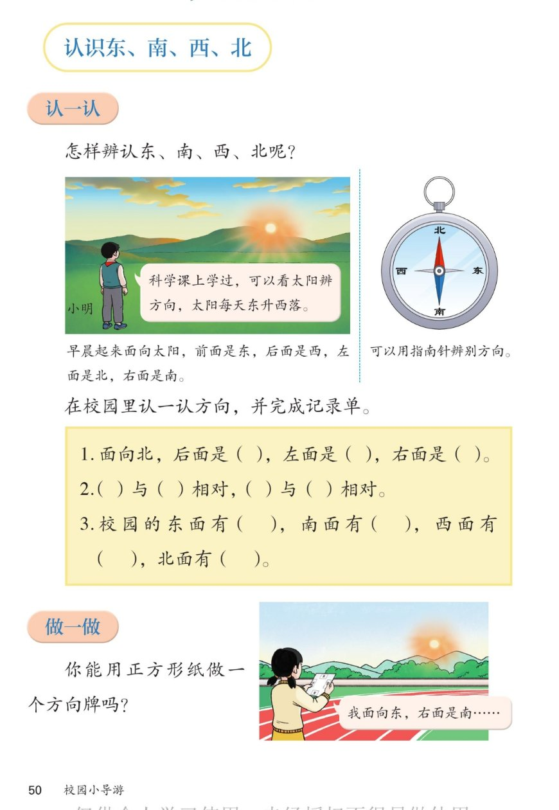

🔊 综合与实践 · 校园小导游 · 课本第 50 页 · 认识东、南、西、北
人教版《数学》二年级上册 · 有声图文带读 · 先想后看解析 · 看太阳、用指南针辨方向
题数
6
认知
2
强化
3
拓展
1
本页重点
早晨面向太阳辨方向 · 记录单 · 做方向牌
🎧 分两步学：
① 解析教材图片
——纯声音读图，读到哪一块哪一块闪动提示；关键处先倒计时让你思考，再在图片下方给出解析并朗读。
② 分层提问练习
——六道分层题（认知 / 强化 / 拓展），先思考再展开解析、朗读参考答案；这一步不再回到图片。
也可以随时点任意一句话、图上任意一块单独听；点课本文字卡还会展开答案。
教材图片（点块听读，读到哪块哪块闪）

📖 人教版《数学》二年级上册 · 课本第 50 页 · 图片仅供个人学习，版权归人民教育出版社所有
🤔 想一想（点我可跳过）
课本的文字（点句子：听读 + 看答案）
认一认
早晨面向太阳辨方向
看答案 ▾
太阳每天
东升西落
；早晨面向太阳：
前面是
东
→ 后面是
西
；
左面是
北
→ 右面是
南
。
🌈 口诀：面东背西，左北右南
指南针
用指南针辨别方向
看答案 ▾
指南针是我国的
四大发明
之一；
它的磁针一端指
北
、一端指
南
，盘面标着北、东、南、西；
阴天没有太阳时，用指南针照样能辨方向。
记录单
三道记录单的答案
看答案 ▾
1. 面向北 → 后面是
南
，左面是
西
，右面是
东
；
2.
东
与
西
相对，
南
与
北
相对；
3. 开放题：结合自己的校园说，例如东面有图书馆、南面有大门（按学校实际填）。
做一做
用正方形纸做方向牌
看答案 ▾
把"东、南、西、北"四个字按
顺时针
顺序写在正方形纸的
四条边
上；
使用时先让"东"对着太阳升起的方向；
女孩示范：
面向东时，右面是南
。
分层提问练习（先想后看解析）
🌅
认知
早晨面向太阳，前面、后面、左面、右面各是什么方向？
看解析
🤔 想一想
解析：
前面是
东
，后面是
西
，左面是
北
，右面是
南
。
太阳从东方升起，早晨面向太阳就是面向东。
🧭
认知
面向北站着，后面、左面、右面各是什么方向？
看解析
🤔 想一想
解析：
后面是
南
，左面是
西
，右面是
东
。
南北相对、东西相对，转过身正好相反。
↔️
强化
哪两个方向是相对的？
看解析
🤔 想一想
解析：
东与西
相对，
南与北
相对；
面向一个方向时，背后就是与它相对的方向。
🔄
强化
面向东时右面是南；那么面向南时，右面是哪个方向？
看解析
🤔 想一想
解析：
面向南时，右面是
西
；
顺时针顺序是东→南→西→北，右面总是下一个方向。
💡 记住顺时针：东、南、西、北
☀️
强化
为什么看太阳就能辨别方向？
看解析
🤔 想一想
解析：
太阳每天
东升西落
，位置有规律；
先定下东和西，再用"相对"关系推出
南和北
。
🌈
拓展
用正方形纸做方向牌，你打算怎么标四个字？
看解析
🤔 想一想
解析：
按地图习惯：
上北、下南、左西、右东
；
或先定"东"，再按
顺时针
依次写南、西、北。
🌈 做好方向牌，下一页要比一比谁发现得多
① 解析教材图片
② 分层提问练习
⏹ 停止
纯声音 + 高亮跟随 · 想好才出解析
← 返回导航